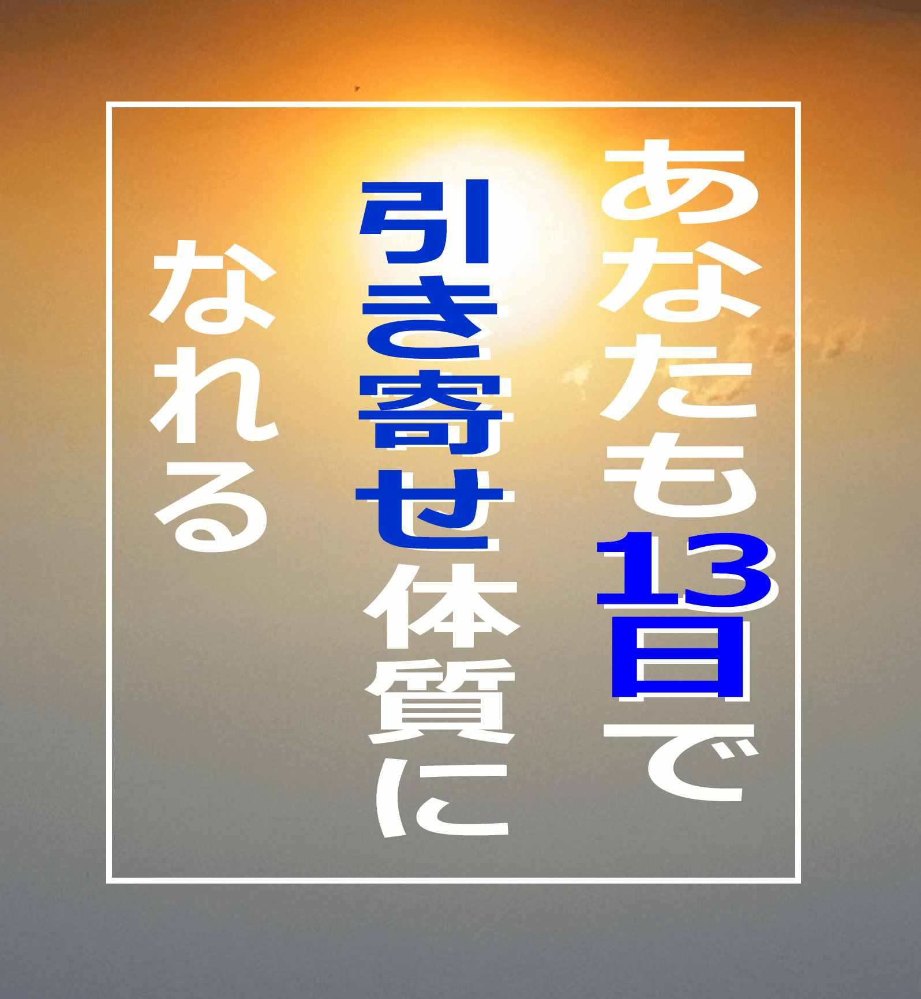

［目次］
まえがき
1.
著名人も引き寄せを使っている事実
2.
逆に引き寄せ
3.
あなたにとって良いことを引き寄せる方法
4.
より幸せな人生に
5.
引き寄せを成功させるには
6.
思えない対処法
7.
あなたは努力も必要ありません
8.
より多く得る人と、少ない利しかない人の違い
9.
各国メディアも明かさなかった！本当の引き寄せのタブー
10.
利権確保のために誰も教えなかった究極の引き寄せ法！！
11.
実は！！あなたも簡単に引き寄せができる
終わりに
まえがき
あなたは、引き寄せという話をご存知でしょうか？
そして、あなたは引き寄せを
書物やセミナーなど、
何らかで学ばれているとして、
今まで一体、
どのくらいの成果がありますか？
お金に恵まれ、
億万長者になって、
病気が治って、
若返り、
悩みが消えうせ、
幸せ、
に、
なれているでしょうか？・・・
きっと
「なっていない・・・・」
という方が、
この本を手にとられているのではないか？
または、
「多少は良いことがあったと記憶しているくらいで、
大金持ちになっているわけでもないし・・・」
という方が大多数ではないか？
と、筆者は考えています。
もしくは、このような図書を専門に書く、
ライターさんなどが、
次の雑誌などを書くための
資料集め程度でしょう。
そもそも、あなたは、
引き寄せを知り、
少しでも実践して以降、
あなた自身の
月収や、生活環境や、人生の幸福感は、
現在どのように変化していますか？
引き寄せを知る前と比べて、
３５～４０％程度
良くなっているならば、
それは上昇中の状態にあるでしょう。
１ヶ月２ヶ月程度先には、
人生はあなたのイメージ通りにバラ色になっていると、
予想されますので、
あなたはそのままで実践されても問題はありません。
しかし、問題なのは、
それ以外の方です。
あなたは、もしかすると、
引き寄せられている"つもり"になっていませんか？
引き寄せられてもいないのに、
引き寄せていると"思い込みたくて"、
「引き寄せられている」
「ラッキーだ！」
など、
"間違ったこと"を思い込んだり、
思い込もうとしたり、
無理にポジティブにしてはいないでしょうか？
そして、その状態で、
周りの身近な人に対して、
引き寄せの大切さなどをスピーカーのように語っていませんか？
きっとそうだと筆者は断言できます。
なぜならば、
それが引き寄せに於いて、
絶対にしてはならない"間違ったやり方"だからです。
そして、知らず知らずそのようなことをして、
更に事態を悪化させている人が多く見られるからです。
実はこのことは、
既にあなたは学んでいるはずです。
しかし、これまでに、
読み飛ばしたり、
または、
そのことだけ、印象に残っていないのだろうと思われます。
再度、あなた自身が学んだ図書や、
セミナー講師などに、
再び、学び直してみることをおすすめ致します。
では、引き寄せは存在しないのか？
答えは、
「ＮＯ！」
です。
引き寄せは、存在します。
世間にある引き寄せの書籍やセミナーなど、
実在しているから、それを伝えている人も無数にいます。
半信半疑の人は、一度そのような引き寄せのセミナーの講師や、通信教材などで、
勉強会などをしている方に直接お会いして、聞いてみると分かるでしょう。
好きなものを
好きな時期に
好きなだけ
宇宙空間から引き出すように、
彼らも、また引き寄せています。
信じられないかも知れませんが、
これは明らかに事実です。
そして、半信半疑や信じられない人が、
その「信じていない」幸せな現実を引き寄せているのは確かです。
あなたが、あなたの願いを真剣に願うとき、
すべては、ほぼ叶っている状態に、限りなく近いのです。
あなたはどんなことを引き寄せたいですか？
沢山の使い切れないお金ですか？
魔力のような超越した能力ですか？
幸せな恋愛や結婚ですか？
不治の病を治したいですか？
現在の勤め先で出世したい？
どんな願い事でも構わないのです。
引き寄せは、あなたの願望を必ず実現してくれる未知のパワーがあります。
あなたが望んだままに全てが手に入ります。
あなたが望んだままに実現します。
あなたがちょっとしたことを気をつけるだけで、
他の幸せな人々と同じように、
あなたも引き寄せによって、
恵まれた豊かな人生を謳歌できるのです。
そして、実は引き寄せは、
既に科学的にも証明されているという、
人類に与えられた、素晴らしい英知なのです。
その科学とは、
あなたもご存知と想像しますが、
「量子力学」や「脳科学」のことです。
きっと
「そんなものは知っている！」
と仰る人が多いことでしょう。
しかし、ここが
引き寄せを"うまく扱っている"、幸せを謳歌している人と、
引き寄せを"しようと頑張って"、イメージしても特に何も大きな変化がない、
人の明暗を大きく分ける、肝心なところなのですが、
うまく引き寄せができていない人は、
たいていのケースでは、同じような間違いをしています。
そのような方には、まず少し考えてみて頂きたいのですが
あなたは何故、
引き寄せを既に知っていて、
科学的な根拠も熟知しているにも関わらず、
あなたの描いた願い通りに"なっていないのか？"
落ち着いて考えてみることをお勧めします。
1.著名人も引き寄せを使っている事実
遥か昔の太古の時代から、『引き寄せ法』というものが実在し、使われてきました。
カード占いなどが得意な人は、この辺りを感づいているのではないでしょうか？
または、歴史に得意な方も、この辺りを感づいているのではないでしょうか？
そうです。
タロットカードなどには、支配する王と、跪く人の姿。
歴史においては、もっと分かり易く、
例えば、お隣の中国では、三国志というものが有名ですが、
その中でも英雄として名が轟く、
「劉備玄徳」は、
そもそも、道端で行商のようなことをし、
日々の生活をされていた貧しい方でした。
それが、後に英雄と語り継がれる２人の騒動に出くわし、
三顧の礼を捧げて以来、波はあったものの、
最終的には、歴史に名を刻む大業を果たしました。
そして、日本国ではさまざまな例がありますが、
比較的近い時代ですと、
豊臣秀吉や坂本竜馬などでしょう。
皆、元々、何か武力や財力に長けていた人達ではありません。
そして、その人達を読み解くと、
あなたがご存知のような、引き寄せをしていることが如実に現れてきます。
また、カードや時代だけでなく、
少しでもキリスト教や仏教など、宗教を学んだ人も、
そのような「引き寄せ」の事実をご存知ではないでしょうか？
このように時代の偉人ばかりを例に挙げると、
少し難しい話に感じる人も多いかも知れませんが、
例えば身近な現代では、
芸能人や選手などのような、
著名人も引き寄せを使っている事実が多数あります。
本人が引き寄せを学び、意識して引き寄せて「いるいない」に関わらず、
殆どのケースでは、引き寄せを使っています。
名前を挙げると、
マツコデラックス
西内まりや
Hey!Say!JUMPの山田涼介
矢沢永吉
高畑充希
松浦亜弥
松田聖子
羽生結弦選手
有村架純
田中理恵選手
ロンドンブーツの田村淳
香川真二
イチロー選手
村田諒太選手
中谷美紀
エドはるみ
ケイト・ミドルトン
レディ・ガガ
本田圭佑選手
矢部浩之
布袋寅泰
尾田栄一郎
斉藤和義
aiko
西脇 綾香
石川遼
北川景子
斉藤和義
タイガー・ウッズ
井ノ原 快彦
宇多田ヒカル
東尾理子
木下優樹菜
真栄田賢
李忠成
武井咲
上島竜兵
平井堅
佐藤隆太
など多数が、夢がかなったことに対して、引き寄せのようなことをインタビューなどで述べています。
引き寄せは実在します。
まずは、あなた自身が引き寄せは、手足や目や耳のように、
「誰にでも備わっている」
と、気づくことが引き寄せの最初のステップです。
誰にでも備わっているものですから、
あなたにも備わっているのです！
あなたは、どんなことを引き寄せたいですか？
2.逆に引き寄せ
あなたの意識にあるものが引き寄せられるのです。
疑うと、疑った事実が引き寄せられます。
悲しみを感じると、悲しみを引き寄せます。
現状の不安や不満に目を向けると、不安や不満が引き寄せられます。
例えば、動物愛護や社会問題などに、立ち向かい戦おうとしている人がいます。
それはとても素晴らしいことです。
ですが、日常的に悲しみや不満を意識的に持ち続けているために、
生活は幸せにはならないことが多いでしょう。
普段から、怒りやトラブルや悲しみが引き寄せられるからです。
また、現段階で、貧しい人や先行きに不安を抱えている人が、
「お金が沢山入ってくる。」
と、引き寄せようとして、プラス言葉を使っている人がいます。
または、風水などのアクセサリーを好んで身につけたりなどもします。
しかし、このような方は、意識が「お金さえあれば・・・」と、
常に、心は金欠状態のことが多く、
言い換えると、「お金がない。」「将来が不安」だから、
口でプラス言葉を述べたり、
幸運のアクセサリーなどを用いています。
実は、意識は「ない。」「助けてほしい」「苦しい」と、自分に強く意識付けしているにしか過ぎないので、
その苦しみから逃れるどころか、逆に引き寄せているだけといえます。
「何を言っているのだか？」
そう思う人もいることでしょう。
そのような方も、
そうでない方も、
今一度、
前章の著名人のことを再度参考にしてみましょう。
この人達は、
「生活に困っているから」「苦しいから」
などという理由で、
有名人や選手などになろうと志したのでしょうか？
そうではありませんね。
『なりたかった。』『なろうと思った。』
そして、
『なる』と意識に決めた。
ということが、
幸運な現実を引き寄せたということなのです。
また、無い現実を、わざわざあるように振舞うような人がいます。
「これなら引き寄せられるのでは？」
と勘違いする人が多いのですが、
実は全くの逆効果でしかありません。
例えば、「UFOを見た」「宇宙と交信ができる」などなど、
嘘やデタラメをついていれば、
それは"自分の意識"が知っています。
意識の中では「バレタら恥ずかしい」「これは嘘」と知っていますから、
その人は、幸せには程遠い人生になります。
"自分の意識"が知っている以上、それが現実として引き寄せられます。
その証拠に、街の占い師や霊媒師や、開運ショップなどを思い出して見ると一目瞭然です。
または、最近の動向として、「目立ちたがり屋」がネットなどを使ってブログやインスタなどで、「リア充」を気取りって事実はそうではない人や、
社会的地位もそこまで高いとはいえない人が、ローンをたくさん組んで見栄を張り、良い格好をする人などもそうです。
本人は"虚像" "嘘" "本当の自分ではない" と、心の中ではしっかり知っています。
生活状況は、幸せどころか、
困窮まではいかないとしても、お金持ちで悠々自適という人は居ません。
殆どの場合、嘘誤魔化しで、お客集めに翻弄して、
自分の人生も迷った中に引き寄せているといえます。
3.あなたにとって良いことを引き寄せる方法
あなたの意識はすべて引き寄せられます。
あなたは「いい気分」のことを願い引き寄せようとしてると思います。
しかし、同時に「悪い気分」のことも引き寄せています。
これはどういうことかというと、
前章でも解説した通り、
あなたの意識が今が不満で、それを変えたいから、
良いことを引き寄せようとすればするほど、
あなたの意識の中には、「現状の不満」が満ち溢れることになります。
理由ありきではなく、
ただ自然に『私はこうなる』ということが、
あなたにとって良いことを引き寄せる方法なのです。
「嘘だ!私は○○なる!と思い続けているけど、ならないじゃないか!」
そのようなことを本を読みつつ思っている人もいるかも知れませんが、
その意識が、そもそも「ならない」を引き寄せています。
実は成功を夢見て、なかなか成功しない殆どの人の共通事項は、
なぜか自分に欲しくないものや、起きてほしくないことを考えています。
あなたもこの本を手にするまでにいくつか引き寄せについて学んだと思いますが、
少し今までの自分を思い出してみてください。
「上手くいかないな」
「嫌なことが起こるな」
「今日は無事でありますように」
「こんなに今月お金を使ったら月末大変だな」
「借金がこんなにある」
「あの人に嫌われてないかな」
「どうも最近体調がおかしいな。悪い病気でなければ良いけど」
「寝不足続きだ」
「鬱かな私」
「なぜ、自分は運に恵まれないんだ」
「体重がなかなか減らないな」
このようなことを考えていることが多くないでしょうか？
ほかには、
「あの人ばかり良い思いして!不幸になってくれればいいのに!」
「クソ!なんで自分ばかり!」
などの人に対する妬みや恨み。
その他、
「私を怒らせたら、不幸になる人が多いんだよね。」
など。
四六時中このようなことばかり考えているわけではないはずですが、
このような事をよく意識にのぼる人が、
十中八九、自分の幸せと正反対のものを引き寄せて、永遠と苦しんでいます。
4.より幸せな人生に
ここでは、前章を
もう少し詳しく見てみましょう。
■「上手くいかないな」
解説:
上手くいかないことを意識して、上手くいかないことを引き寄せている様子です。
■「嫌なことが起こるな」
解説:
嫌なことが起こることを意識して、嫌なことが起こることを引き寄せている様子です。
■「今日は無事でありますように」
解説:
危険や嫌な出来事を予め意識して、危険や嫌な出来事が起こる確立を高めるように、を引き寄せている様子です。
■「こんなに今月お金を使ったら月末大変だな」
解説:
お金がなくなる、足りないを意識して、お金がなくなる、足りないが起こることを引き寄せている様子です。
■「借金がこんなにある」
解説:
借金が沢山あるを意識して、借金が沢山あることを引き寄せている様子です。
■「あの人に嫌われてないかな」
解説:
嫌われるを意識して、嫌われることを引き寄せている様子です。
■「どうも最近体調がおかしいな。悪い病気でなければ良いけど」
解説:
病気や体調不良を意識して、病気や体調不良を引き寄せている様子です。
■「寝不足続きだ」
解説:
寝不足を意識して、寝不足を引き寄せている様子です。
■「鬱かな。。私」
解説:
鬱を意識して、鬱病を引き寄せている様子です。
■「なぜ、自分は運に恵まれないんだ」
解説:
運に恵まれないを意識して、運に恵まれないを引き寄せている様子です。
■「体重がなかなか減らないな」
解説:
体重がなかなか減らないを意識して、体重がなかなか減らないを引き寄せている様子です。
このように、あなたが「嫌だ」などで避けたいことや、現状のことまでも引き寄せてしまいます。
ここで、あなたが再認識するべきことは、
「あなたの意識、考えていることは、引き寄せられる」
ということを忘れないでください。
意識や、考えることとは、
あなたがネット上などで物を書いたり、
なにか意見をしたりも同じです。
みすみす不幸になりたいという人ならば、
感情の赴くままに振舞えばよいのだと思いますが、
もしもあなたが、
引き寄せを使いこなしたい、
より幸せな人生にしたいと望むならば、
「あなたの考えていることが、全て引き寄せられる」
ということを
今後気をつけてみると良いでしょう。
5.引き寄せを成功させるには
引き寄せを成功させるには、
先ほどもお伝えしましたように、
「意識や考え」というものが、
すべての中枢です。
あなたの「考え」「意識」というものは、
実は、周りの環境などからも、大きく影響を受けています。
例えば、
生ごみが放置してあるような、散らかっていて不潔な部屋。
その辺に督促状や、請求書が投げてあって、
テレビが流されている。
いつも節約やお金のことが気にかかり、できるだけ安価にことが済むように工夫している。
あまりにも酷い例ですが、
ここまでとはいかないとしても、
似たような人が多少はいるかと思います。
何をいいたいかというと、
先程から繰り返している、
「考え」「意識」
ということにリンクしているということを知っておいていただきたいのです。
考えや意識は、「視覚」から起こることが多く、
目から入る情報はとても重要度が高いのです。
その証拠として、
人間の3大欲求
「食欲」「睡眠欲」「性欲」
の中の
「性欲」で考えてみると、
「視覚」の重要性がとても理解しやすいでしょう。
セクシーな画像や、Hな動画を
視覚として捉えると、
少なからず、
性的興奮や感情が湧き起こるでしょう。
見ただけで、瞬時にそれだけの感情が湧く
のです。
それだけ視覚的効果というものは、
あなたの「考え」「意識」に影響を及ぼしているということです。
先ほどの例を紐解いてみると、
■「生ごみが放置してあるような、散らかっていて、不潔な部屋。」
解説:
このような状況から抜け出したい気持ちは分かりますが、
いくらイメージを「裕福」にして引き寄せようとしても、
視覚情報から
「汚い」「貧しい」意識が飛び込んできています。
散らかっていて、不潔な環境を意識して、散らかっていて、不潔な環境を引き寄せている様子です。
■「督促状や請求書がなげてあって、」
解説:
いくらイメージを「裕福」にして引き寄せようとしても、
視覚情報から
「お金がなくなる」「お金を失う」意識が飛び込んできています。
督促状や請求書が目に付いて、お金がなくなる・お金を失うことを意識して、お金がなくなる・お金を失うことを引き寄せている様子です。
■「テレビが流されている。」
解説:
意識によって引き寄せられるわけですが、
テレビなどは、沢山の情報をあなたの視覚や聴覚などの意識に飛び込んできます。
すべての情報があなのた思い描く未来と関連しているのであれば、それはとても良い情報であるのですが、
テレビというものは、犯罪のニュース、下品なお笑いなど、
あなたの描く願望とは全く逆のことが、次から次へとあなたの意識に飛び込んできます。
その不要ともいえる、たくさんの視覚や聴覚情報から、意識が錯乱・混乱する原因をつくり、目的意識を不明確にします。
錯乱・混乱を意識して、錯乱・混乱を引き寄せている様子です。
■「いつも節約やお金のことが気にかかり、できるだけ安価にことが済むように工夫している。」
解説:
節約やお金のことが気にかかったり、できるだけ安価に、ということは、
「これ以上、自分にはお金は入らない」「使えばなくなる、苦しくなる」という意識の表われです。
「いくらでも欲しいだけ入る」、「今後、すぐに裕福になる」と意識できていれば、節約したりお金のことは気になるはずはありません。
お金がなくなる・お金を失うことを意識して、
お金がなくなる・お金を失うことを引き寄せている様子です。
『生ごみが放置してあるような散らかっていて不潔な部屋。
その辺に督促状や請求書がなげてあって、
テレビが流されている。
いつも節約やお金のことが気にかかり、できるだけ安価にことが済むように工夫している。』
わずかこれだけの環境の中に、
これだけ沢山の願望とは逆の引き寄せが力を発揮しているのです。
ここまで劣悪な状況は、流石にないかも知れませんが、
このようにして、ご自身の身の回りの環境を考えてみると、
今まで何故上手く引き寄せられなかったのか？
理由が見つかるようになるはずです。
人は十人十色といわれますが、
環境や意識などは、一人ひとり違います。
ご自身の特徴を観察し、引き寄せられなかった問題を潰してゆけば、
引き寄せが自在に起こせるようになっていくわけです。
この例の環境で説明すると、
引越しをして、生活環境をより高いものにし、
節約など、自分の意識を抑圧する考えをやめ、
自分の願望が近々叶うものとして、
意識や生活を習慣付ける。
このようにすれば、引き寄せが可能ということになります。
6.思えない対処法
既に叶っている自分を意識すれば、
今現在の意識も感覚も変わります。
毎月10万円の稼ぎしかないと意識付けしている間は、
気軽に10万円以上を使うなんて考えられないでしょう。
しかし、そのような人が、
「30万円入る」と意識付けしていれば、
それは引き寄せられ、本当に30万円入る生活になります。
殆どの人が、「そうは言っても・・・」と尻込みをします。
そして、「10万円以上入っ『たら』」と計画的に、怪我の無いようにはじめます。
そして、ほぼ100%といっていい程、その「10万円以上」に手が届くか、届かないかのところで苦しみます。
それはなぜか？
理由は、とても簡単です。
「自分はそれだけやれる!」
と意識がないからです。
言い換えると、自分を信じていないのです。
自分を信じない人で、結果が優れているという話は、殆どのケースありません。
あなたも引き寄せる力は持っています。
しかし、確信しない限りは、今までと同じような現実でしかありません。
「思えない。」のではなく、
思えばいい
のです。
意識付けとは、「思う」ことです。
そしてその意識はあなた自身がコントロールするものです。
あなた自身のことを、
あなたが「できない」という言うのは、
「そこまでしてやりたくない」
ということです。
「引き寄せたくない。」
言い換えると、
今の現状でも困っていないし、無理もしたくないということです。
今まで、うまく引き寄せられなかった理由は、ここにあるのです。
もしも、「引き寄せたくない。」と思っているかも？。
と気がついた方は、無理に変えようとする必要はないでしょう。
無理に変えると、そのしわ寄せは必ずあります。
しかし、諦める必要もありません。
今後、気持ちに余裕が出てくるまでに、
「意識で引き寄せている」
ということに気をつけつつ、過ごされると良いでしょう。
7.あなたは努力も必要ありません。
前章の続きになりますが、
環境は非常に大切です。
あなたの意識に、あなたの望み以外のものを取り入れないように、
私生活の環境を見直してゆきましょう。
特にやりがちなのが、
自分より格下の人と付き合ったり、
自分より貧しい、困っている人を相手にしたり、
などが、
あなたの
望みから遠のかせる
のです。
ネット上では、例えば人の批判を読んで笑ったり、
または匿名だからバレないと考え、憂さ晴らしのつもりで野次を飛ばしてみたりなど、
または、仕事帰りの居酒屋で、愚痴るなど、
または、知り合いや家族などに愚痴を言って発散など。
ストレス発散のつもりが、あなた自身にまた同じような愚痴りたくなるような嫌な状況を引き寄せます。
あなたが本心で望みを叶えたい、引き寄せたい、と考えているならば、
このような行動は慎むべきです。
我慢ではなく、考えないようにする
のです。
人は、殆どのケース、同じようなレベルの仲間や知人で構成されます。
そのほうがお互い傷つかないですし、無理をしなくていいからです。
ほとんどの人は皆、変化を嫌います。
だから、愚痴を言う人の周りには、いつも愚痴や世間の噂話が好きなことが集まり、その話で持ちきりになります。
向上心の欠片もありませんので、当然良いことを引き寄せることよりも、嫌なことや変なことばかりを引き寄せます。
そして、またそれを話題にして、話に華が咲きます。
これが楽しいのです。
本人が「そんなことはない!」といったとしても、
その会話やその集団にいることを望んでいて、楽しいから、またそのような意識から引き寄せているわけです。
馬鹿と貧乏は風邪のようなもの、と聞いたことはないでしょうか？
移る
のです。
相手にしているとその言葉などが、あなたの意識に入ってきて、あなた自身がその話を楽しむようになったり、
貧しい人を見たり感じたりして、あなた自身の意識がそう染まっていきます。
そして、その意識で引き寄せはじめます。
見たまま、触れたままに、引き寄せられます。
だから、あなたは努力も必要ありません。
ありのままの、あなたのままで良いのです。
8.より多く得る人と、少ない利しかない人の違い
時々、成功者やお金持ちが
格下の人を相手に語ることがあります。
しかし、その人は
貧しくなっているよりも、更にお金持ちになっているように思えませんか？
答えは、NOです。
実際には、
本来そのような人を相手にしなければ、
100ドル入る予定が、
そのような人を相手にして、
80ドルしか稼ぎになっていないという状況になっているのです。
そして、成功者は精神的にタフが多いですが、
日中から不満や愚痴のレターが届き、
質疑応答でも、情けないことを聞かされ、
それに答えます。
精神的に、徐々にストレスが蓄積され、
本来の力が発揮できない状態にしています。
成功者だからこそ、顔色をそう変えることもなく続けていますが、
普通の人がその真似をすると、見るも無残に疲れ果てて、
自分の本来求めていたものとは違う、苦悩と混乱の現実を引き寄せます。
成功者がそれをする理由は、
『徳』を得るためです。
少々、自分の利を切り捨ててでも、『徳』がつき、
後からその恩恵が手に入ることを知っているために、
それが可能なのです。
しかし、普通の人が真似てしまうと、
まだそんなに余裕もないわけですから、
自分を破壊させるほうが先にやってきます。
今日、明日の食い扶持に困っている状況に、5年先に纏めて給料を支払うと言われるようなものです。
普通は自分が持ちません。
しかし、成功者は
利益の受け取りは先にすればするほど、受け取れる利益は大きくなることを知っています。
体力も十分ありますので、5年先まで喜んで待てるのです。
ここであなたが知っておく内容は、
あなたも聞いたことがあると思いますが、
● 「自分が普段付き合っている人、『5人』の平均年収が自分の年収になる」
ということ。
自分の現在の能力を見極めながら、付き合う人を選ぶ必要があります。
いくら引き寄せができるといっても、
あなたが貧しい者を相手にすればするほど、その貧しい者に目線を合わせるように、何故かあなたの収入などは減ってゆくのです。
貧しい人は何故貧しいのか？、と考えてみると分かりよいでしょう。
貧しい人は自己での生産性がなく、
「貰おう」「欲しい」「ください」と、他者から受け取ることを望みます。
言い方を換えると、
貧しい者は、他者の持ち物から、引き寄せ受け取ろうとしているのです。
よって、あなたの収入などは下がり、あなたが相手にしていた貧しい人の収入が上がり、あなたも含めて全体的に低い位置で馴染みます。
あなたが自分より格下の者を相手にする場合には、この仕組みをよく熟知しておくことが大切です。
● 「利益は後に受け取るほうが、より大きな富になる」
「徳」というものもそうですが、徳という言葉ではなかなか理解しづらい方もいると思いますので、
「徳」を銀行に預けている、金銭などとして考えてみましょう。
または、信用などでも良いでしょう。
どんなものでも、すぐに手にしていたのでは利益は少なくなります。
● 「収入以上の生活をしない」
収入を超えた生活をすれば、当然ですがいずれ窮地に追い込まれたり、破綻を招きます。
ここは誰しも理解していることでしょう。
しかし、この格言は必ずしも「収入」ということだけに限ったことではなく、
「収入」を「体力」や「能力」や「技能｣や「信用」などと置き換えてみると良いでしょう。
尺度を超えたことを望み、範囲を超えたことをすればいずれ窮地に追い込まれたり、破綻を招くことを
常に心がけておくことが大切です。
引き寄せができるようになってくると、殆どの人々が嬉しくなり自分の知識を誰かに教えようとします。
そしてそれを教えるのは、十中八九、自分より劣っている人。
即ち、格下の困っている人へ伝えようとします。
そして、伝える側は、伝えることで自分の自尊心を満たそうとするのですが、
自分の尺度を知らないがために、その人自身がその劣っている人達に引き寄せられてしまい、徐々に低い位置に馴染みます。
これが、より多く得る人と、少ない利しかない人の違いです。
9.各国メディアも明かさなかった！本当の引き寄せのタブー
・嘘をついて人の気を引くこと。
解説:
人気を得たいがため、
または、目立ち売り上げを上げるなどの工作
など、
これは今までにも書きましたが、
本人が知っていることです。
本人が「バレたら」などを感じるようなものは、
その要素が引き寄せられますので、
なかなか上手くいかないどころか、
いつしか人までも疑ってみるようになり、
人からも信用されなくなります。
・わざと傷を見せるようにして人の気を引こうとすること。
解説:
どれだけ自分は不幸なのか。
または、
例えば
何かの健康食品などを用いてみて、
「効果がなかった」「どうも具合が悪い」
何かアクセサリーを買って、
「運が悪くなった」
なども
それと同じ要素です。
相手の気を引きつけようとして、自分から
悪い方向に意識作り、
本当にその状況を引き寄せてしまいます。
これはよくありがちなケースで、
心配してもらうために気を引こうとして、
「おなかが痛い」「頭が痛い」などと言っているうちに、本当に自分がそうなってしまい、
周りにも余計な心配をかけたうえ、
自分も苦しむという、本来の楽しむ姿とは違うことを引き寄せている形です。
そして、そのうち周りからも嫌われます。
・閉じこもる
解説:
引き寄せとは、何もしなくても引き寄せられる魔法ではありません。
無人島で一人で引き寄せに励んでも、大金持ちにもなりませんし、最愛の人と出会いハッピーエンドにもなりません。
お金も、幸せも、人と接することで生まれるものです。
・できないことを数える
解説:
これについては、解説する必要はないと思いましたが、
できないことを意識していれば、引き寄せられるのはできない現実です。
要領の悪い人は、失敗ばかりを気にします。
そして、更にそのような現実を引き寄せます。
できないことを数えるのをやめて、できることを数えましょう。
・できることをする
解説:
できることをするのは、「失敗を恐れている」意識があるからです。
引き寄せられるのは、失敗するかしないかの、ぎりぎりという範囲に収まります。
よくありがちなのは、
「自分と釣り合った範囲のパートナー探し」をして
主人が稼ぎが悪い、妻が良妻ではないと、人生を無駄に過ごすことや、
「損しないから」と
例えば近年ですと、Yutubeで副業などを考え無駄に時間だけを浪費すること。
小銭を稼ぐために1時間使うことも、大金を稼ぐために1時間使うことも、同じ1時間ということを冷静に考えたり、理解していないのです。
時給1000円欲しさにパートにでかけているならば、何百万円も転がってきたり、大金持ちになることはありません。
疲れない程度、できることをしていたのでは、いつまでもそれ以上のことは引き寄せられません。
10.利権確保のために誰も教えなかった究極の引き寄せ法！！
意識が整っているか？
身の回りの付き合いや環境が整っているか？
この二つが必須用件で、大前提です。
これらが整っているあなたは、
今日から引き寄せによって、
思い通りに人生を楽しむことができます。
ノートや手帳を一冊ご用意ください。
まず、将来の自分像はどんな感じでしょうか？
「こうあって欲しいのだ!!」
というものではなく、
「こうなっているだろう」
と素直に思える自分像です。
「家がこんな感じ」
「乗っている車がこんな感じ」
「ご近所とはこのような付き合いで」
「通帳にはこのくらいあって」
など、
詳しく出してください。
再度申し上げますが、
断じて
「こうあって欲しいのだ!!」
というものではありません。
あなたがこれから将来、
この調子で人生を歩んでいき、
結果的に「当然このようになる」と思える姿です。
それが判断ついたら、
ノートや手帳に、そのことを詳しく書きましょう。
家や通帳など、頭の中にイメージがあればそれを
絵として書いてください。
そして、その未来とは
あなたに、いつ頃起こっていることでしょうか？
3年後？
5年後？
10年後？
その何月で、何日くらいでしょうか？
西暦で年号と、月、日を書き留めてください。
そして、このノートに、
今日からあなたの身に起きている
引き寄せた事を
日記として綴ってください。
細かく記す必要はありません。
「今日は100円拾った」
「今日は好きな人から電話があった」
など、
些細なことでも構いません。
その未来の日時までの期間、毎日欠かさず書きとどめてください。
11.実は！！あなたも簡単に引き寄せができる
ほぼ、これで簡潔していますが、
もしもほかにも文献などで学びたい方は、
Google検索
引き寄せ 体験 著名人
引き寄せ 法則 効果 本質 思考 願望
など、
Youtube
引き寄せ 体験
引き寄せ 方法
または、
ブログなどでは、
アメブロが盛んのようで、
引き寄せ 日記
引き寄せ ノート
引き寄せ 理想の未来
等で、
アメブロの検索をすると、
沢山ヒットします。
引き寄せの体験をたくさん読んでいるうちに、
さらにあなたにも簡単に引き寄せられる方法が身につくことでしょう。
ただし、ここで繰り返しになりますが、
ひとつ注意事項として、
あなたよりも格下な人の話を参考にしたり、目にしない、ということを注意されることが肝心です。
終わりに
引き寄せは、
本来そう難しいものではありません。
無理にポジティブにする必要も、空元気になる必要もありません。
ただ、
「悪いことが起きそうだ」
「このままだと未来は絶望」
「あの人は私のことを嫌いなのかな」
など、
まだ起きてもいないことを
勝手に悪いほうに捉える意識が、
自分にとって良くない引き寄せになっているということです。
または、嘘隠し、気を引きたくて・・・など
自分の本心が知っていること。
その意識が自分に引き寄せられているということです。
または、疑うことです。
あなたが付き合おう、結婚したいと思う相手から、
「本音は何？」「浮気していない？」
「騙そうとしてない？」「Line見せて」
など、
考え、疑い、疑心暗鬼だった場合どう感じるでしょうか？
人にもよるかも知れませんが、
「嫌」になるでしょう。
疑われたり、試される等
普通の精神の人は嫌います。
そして、その相手は「疑った」「不安」等が
引き寄せられて、フラレるという現実が起きます。
成功者や幸せを謳歌している人で、
そう神経質に考えに考えたり、
考え込んだり、悩んだりしないものです。
決めて「できる」と信じて、すぐに行動に移します。
楽しそう、面白そうだから、すぐに行動します。
失敗の恐れではなく、実現したときの喜びのイメージのほうが優先されているわけです。
これらは、
チャンスをスムーズに掴んで急激に上る人と、そうではない人の違いも似ています。
人から何かを指示され、すぐに返事をして、すぐに行動に移す人が、成功や幸せを現実のものとしますが、
チャンスをものにできない不幸な人は、まずじっくり検討します。
そして、行動を起こすまでのタイムラグが長いのです。
チャンスを与えたほうにも、「時間」というものがあります。
そのうえ、チャンスを与えたほうは、人にチャンスを与えられるだけの余裕がある人ですから、普段も周りから頼られたりなど、様々な活動をしていますので、
ほとんどのケース、数ヵ月後もしないうちに、まったく違うことを取り掛かっているものです。
チャンスをものにできない人は、後から気持ちが乗ってやろうとして、チャンスを与えてくれた人にアピールしますが、
その頃にはその人は、既に違うことに取り掛かっているために、当初のように目線を合わせて話を聞いてくれる時間すらなくなっているのです。
チャンスをつかめる、掴めないも、
結論的には、
何らかの「疑い」が原因なのです。
疑う人は、自分の力量を疑い、自信がありません。
自信がないから、行動が遅れます。
行動が遅れ、受け取る利が少ないから、
幸せや充実感が少なくなります。
やがて笑顔が少なくなります。
笑顔が少なくなると、元気が少なくなります。
元気が少なくなると、今度は自分より元気のない人を相手にして、自分の自尊心を高めたり、心地の良い居場所を求めようとし始めます。
いつしか、嘘をつくようになり、嘘の衣を身にまとい、自分の本当の姿がわからなくなります。
そして、特に能力も身についていないにも関わらず、
自分がチャンスを与えようとする上の者と同等の気分になり、中身もないにも関わらず生意気風を吹かし出します。
チャンスを与えようとする上の者は、経験豊富ですから、それを黙って見抜いています。
そして、その人はチャンスは与えられないまま、煙たがられて縁が途絶えます。
チャンスに授かれなかった人は、既にこのときには気づきもしません。
ただ気づいているのは、そんなに裕福にもなれていない事実ということだけです。
そして、それを周りに悟られると、自分の居場所がなくなるために、無理やりにでも幸せを演じたり、格下の人を相手に奮闘します。
そして、格下の人の引き寄せに引き合うようにして、いつしか自分も低い位置に居ることになります。
これが世の常です。
原因は、「疑う」ということ。
信じなければ、自分自身も信じることはできません。
信じるとは、自信ということです。
自信が漲れば、余裕があり自然に笑顔でいられます。
心から
の笑顔の人には、たくさん良い人が集まります。
たくさんの良い人は、それ相応のチャンスを持っています。
どんどん良いことを引き寄せます。
そして、日々が心から楽しい時間ばかりを過ごせるようになります。
日々朗らかで楽しくいれば、
悪い未来よりも、良い未来が感じられるでしょう。
すると、引き寄せられることも、良いことが現実となってあなたに現れるのです。
本書が末永くあなたの人生にお役に立てることを願います。
December 2, 2017
ステイタス文庫
Jenny Alves
Rei Amamiya